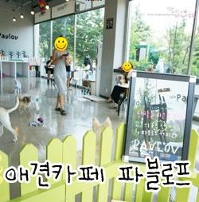
저희집 근처에 애견카페 생겼다는 소리를 듣고..
한번은 가봐야지.....하고 생각하고 있던 찰나
심심도 하고..ㅋㅋ
아이들 산책 겸 찾아가 보기로 합니다.
작전동 애견카페 파블로프로 고고!!!!
6월 말 오픈일에 방문했던 애견카페 탐방기입니다.ㅋㅋ
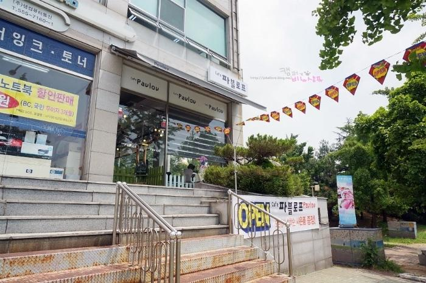
오픈 현수막과 함께
오픈 가랜더가 펄럭펄럭~
오픈 행사 선착순 사은품 증정!이 눈에 띄네요^^
작전 이마트에서 작전역 방향으로 조금만 올라오심 바로
오른편에 위치~
저희집선 걸어서 400미터?정도는 되려나요..
11시 오픈
11시를 살짝 넘긴 시간이지만..
제가 첫 손님은 아니었어요.ㅋㅋㅋㅋㅋㅋ
저 원래 카페 이런데 혼자 드나드는 뇨자 아닌뎅..
물론 커피도 안마시니
카페도 잘 안오지만요.ㅎ
비누와 샴푸가 함께할 수 있는 애견카페이기에~
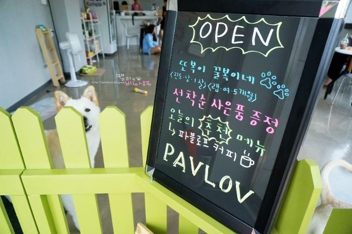
파블로프의 상주견으로는
또복이와 꿀복이가 있습니당~ㅎ
또복꿀복 귀요미.
덩치는 큰데 역시 애견카페견들은 순딩이
비누는 그래도 애견카페를 와본적이 있는지라
큰아이를 피해 쑥~~ 들어가는 반면,
샴푸는 첨에 좀 쫄았다는요?ㅋㅋㅋㅋ
안들어가려고 버팅기더니..
들어가서는 머........;;;;;;;;;;
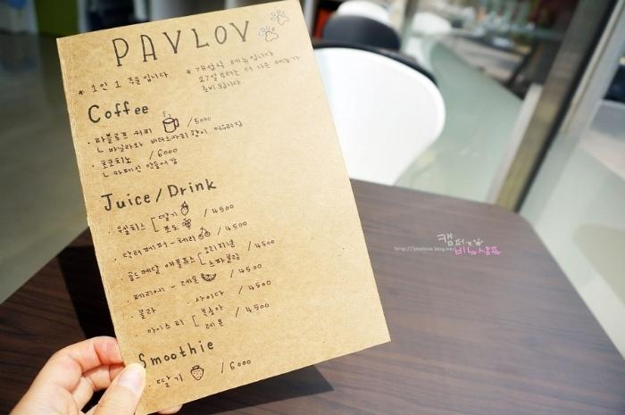
개업한지 얼마 안되
단촐한 메뉴..ㅎㅎ
지금은 요것보다 더 많은 메뉴들이 있으니
선택의 폭이 더 넓어졌다지요.
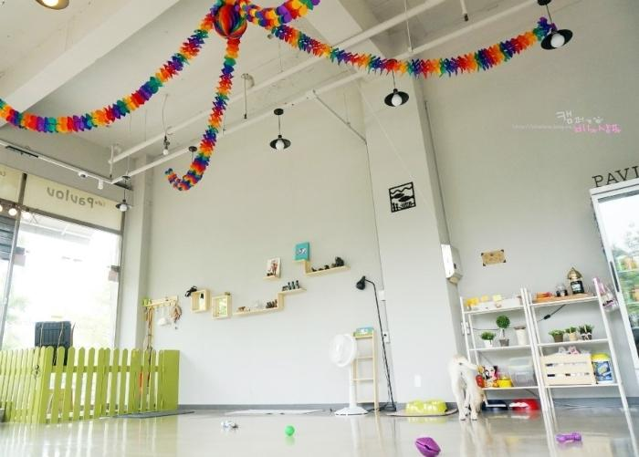
카페 내부는 그리 크진 않습니다.
테이블도 6개 정도?
아이들 뛰어놀 공간을 마련하기 위해
테이블 수도 적게 놓았다고 하네요~
한쪽벽면은 통유리라 햇빛도 잘 들고~
여름엔 햇살이 뜨겁긴 하지만;;;
내부는 시원하네요
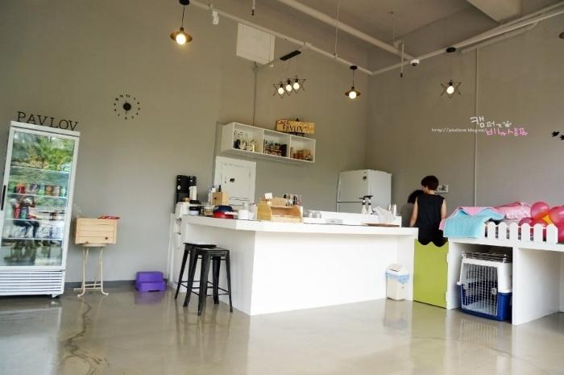
복숭아 아이스티 제조 중
사장님들이 모녀사이더라구요~
부럽~^-^
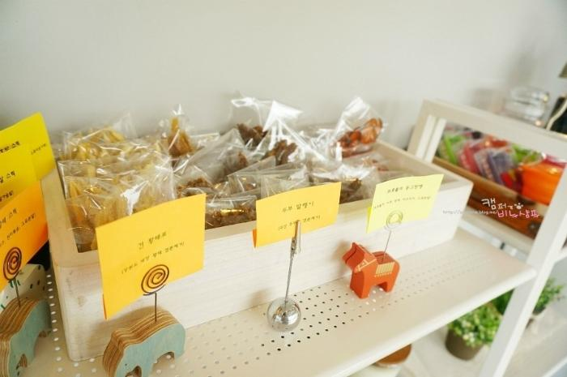
파블로프 카페에서
직접 만들어 파는 강아지 수제 간식
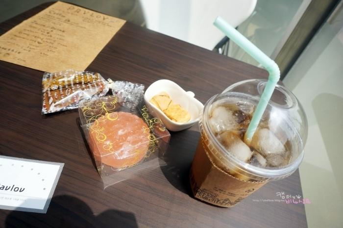
스탬프 10번을 찍으면 메뉴중 한개가 공쫘~
강아지 간식도 먹여보라고 주시고..
오픈이벤트 수제 비누도 주시고..ㅎㅎ
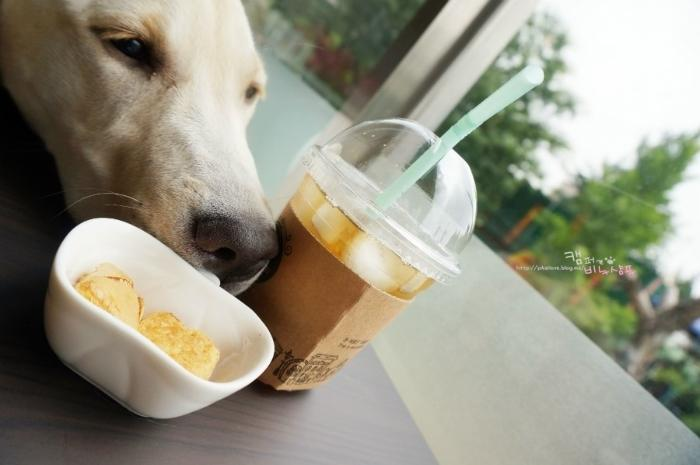
먹을 걸 탐내는 꿀복!
안돼~!
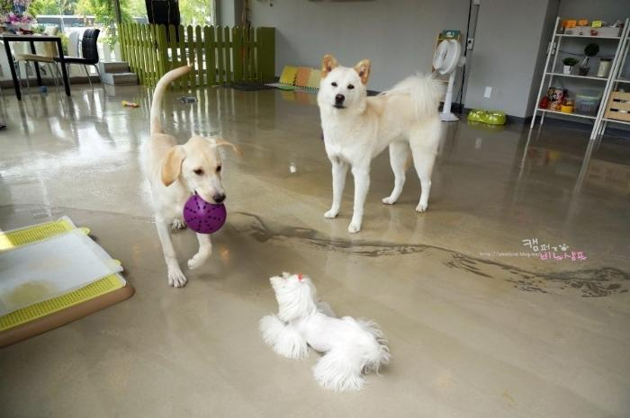
앙앙앙~
놀자고 댐비는 샴푸
마냥 친구들이 좋은..
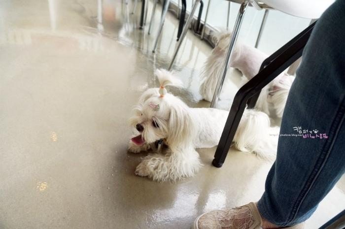
그에 반해 다들 아시겠지만
비누는 쭈구리입니당.ㅎ
테이블 밑에서
강아지만 가까이 오면 짖는;;;;;;
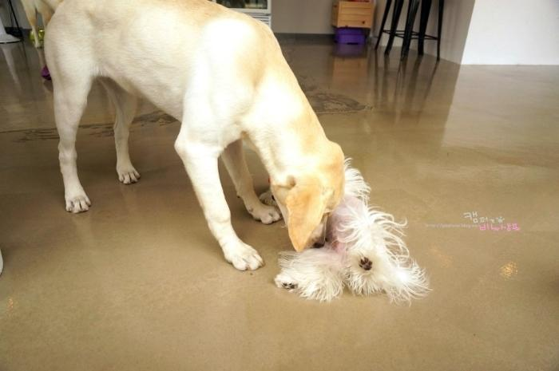
샴푸는 놀자 댐비다가도 가까이 오면 발라당~
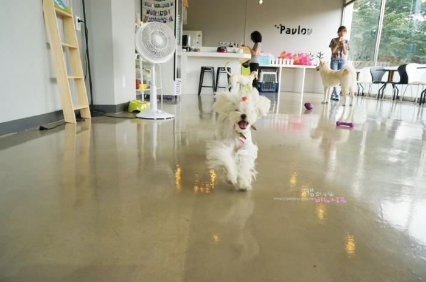
아주 그냥 신이 나셨쎄요?
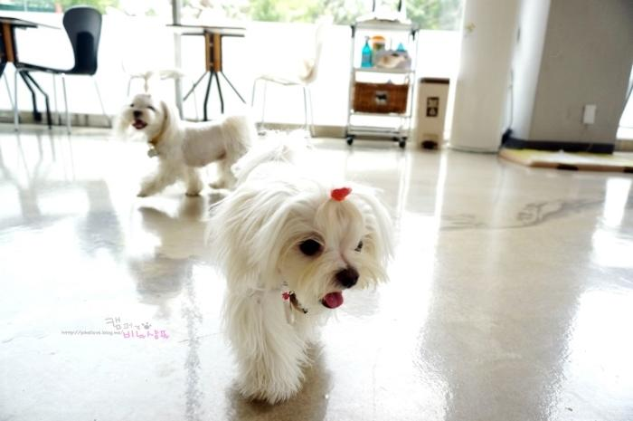
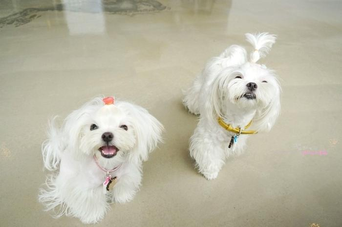
발발발발 잘도 뛰댕기는 샴푸와
이제 조금은 익숙해 진 듯
자기집 마냥 엎드려있는 쩍벌녀 비누입니다.ㅋ
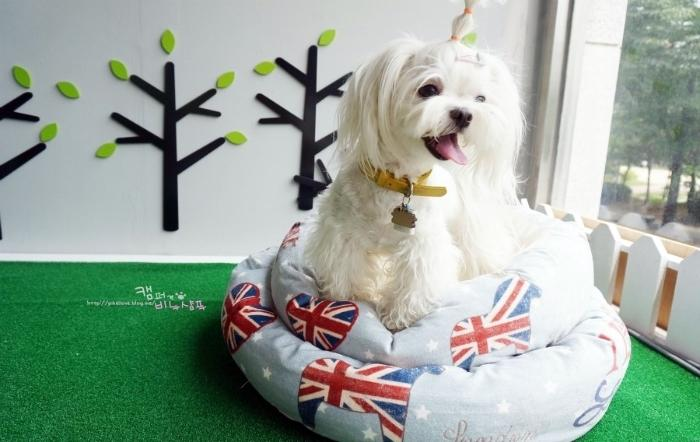
파블로프의 포토존?
비누랑 샴푸도 온 기념으로 한 컷~
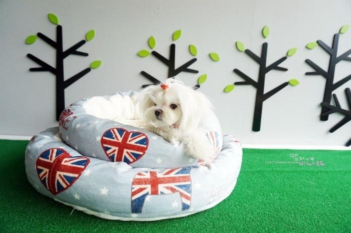
샴푸는 자기 방석마냥 들어가서 안나오심요;;;;;;;;;
그 방석이 맘에 드는게냥?
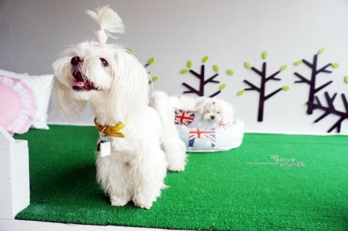
자리깔고 누우신 샴푸 뒷배경.ㅋ
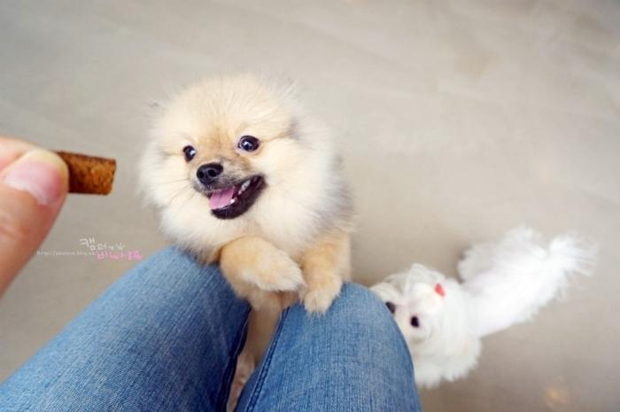
놀러온 손님 8개월 포메남아
에너자이저 킹콩이~ㅋ
쉴새없이 뛰노는...ㅎㅎㅎㅎㅎ
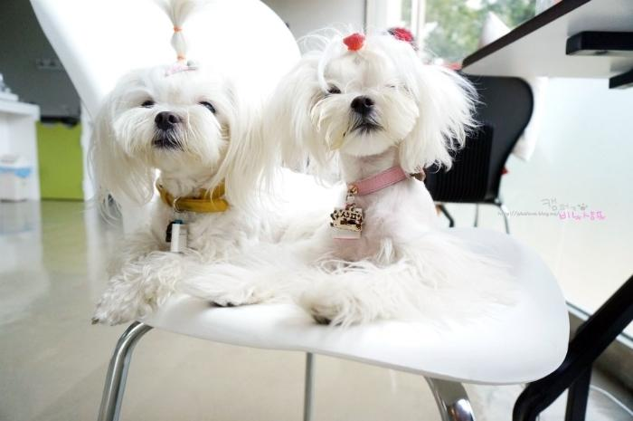
샴푸도 머리 산발이 될 정도로 뛰놀고
발라당하고;;;
수다 떨며 또 놀다가
몇시간을 있었던겐지;;;;;
담엔 힘찬이도 한번 와보는걸로~
나오기 전 카페 내부 전체컷~
손님들이 하나둘씩..제법 들어오십니다..ㅎㅎ
저처럼 혼자 오시는분들도 꽤 계시공~
주차는 1시간 30분이 무료!! 2분정도 늦게 나갔는데
500원 지불. 얄짤 없어요~ㅋㅋㅋㅋㅋㅋㅋㅋㅋ
차가지고 오시는분들은 딱 1시간 30분만 놀다 가는걸로요^^
|